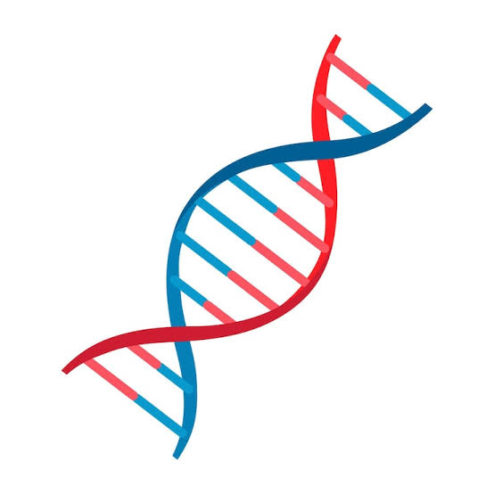
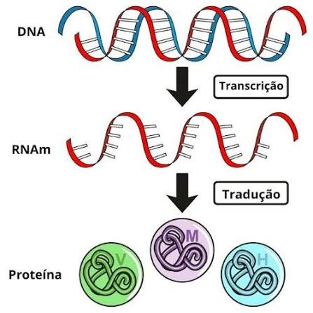
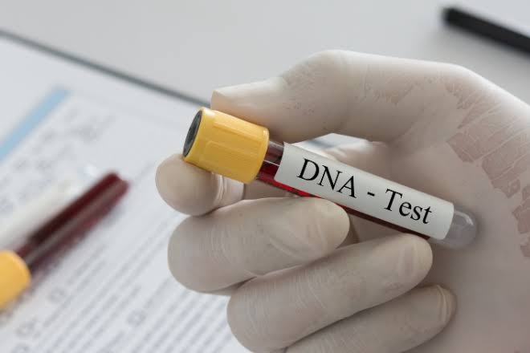
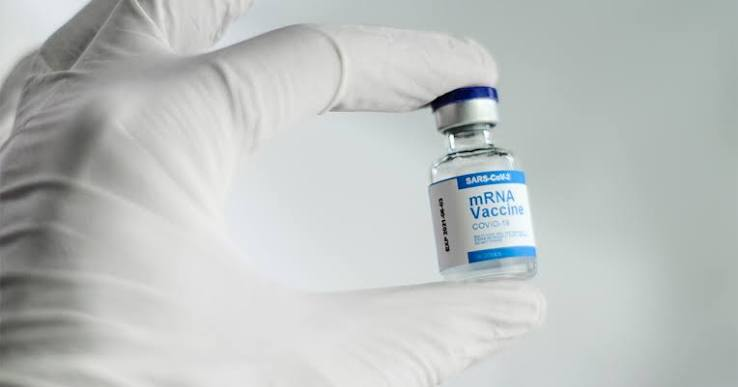

O que são ácidos nucleicos?
Os ácidos nucleicos são macromoléculas constituídas por nucleotídeos, que formam dois importantes componentes das células, o DNA e o RNA. Eles recebem essa denominação pelo fato de possuírem caráter ácido e por serem encontrados no núcleo da célula.
Estas são as bases nitrogenadas.
DNA x RNA: quais as diferenças?
A pentose presente no DNA é a desoxirribose, já no RNA trata-se da ribose e, por isso, a sigla DNA significa ácido desoxirribonucleico e RNA é o ácido ribonucleico.
Açúcar
Desoxirribose (C5H10O4)
Ribose (C5H10O5)
Bases nitrogenadas
Adenina, guanina, citosina e timina.
Adenina, guanina, citosina e uracila.
Número de fitas
Fita dupla
Fita simples
Onde fica na célula
Núcleo celular
Núcleo celular e citoplasma

Legenda: DNA em dupla hélice.
Legenda: RNA em fita simples.
Qual a função de cada um?
Função do DNA
O DNA é uma molécula que transmite informações genéticas codificadas de uma espécie para os seus sucessores. Ele determina todas as características de um indivíduo e sua composição não muda de uma região do corpo para outra, nem com a idade ou ambiente.
Função do RNA
Para ocorrer a síntese de proteínas, alguns trechos de DNA são transcritos para o RNA mensageiro, que leva a informação ao ribossomo. O RNA transportador é responsável por trazer os aminoácidos para produção das proteínas. O ribossomo fabrica a cadeia polipeptídica conforme a descodificação da mensagem recebida.
Do DNA à proteína

Legenda do esquema: o caminho da informação genética.
1. Replicação
Replicação, referimo-nos ao processo pelo qual cópias idênticas à cópia de uma molécula de DNA são formadas.
2. Transcrição
Transcrição é aquele no qual o DNA é usado para a formação de uma molécula de RNA.
3. Tradução
A conversão da mensagem do RNAm em uma sequência de aminoácidos para formar uma proteína.
Um exemplo do dia a dia
Teste de paternidade
O teste de DNA, chamado de DNA figerprint ou impressão digital genética, fornece um grau de confiabilidade bastante alto, ultrapassando 99,9% de certeza em seu resultado.

Na ciência e na tecnologia
Vacinas de RNA
As vacinas de RNA mensageiro (mRNA) são um tipo de imunizante que utiliza uma fita sintética de material genético para ensinar as células do corpo a produzirem uma proteína inofensiva de um patógeno (como um vírus), estimulando o sistema imunológico.
